功能
1）登录豆瓣
2）修改签名
登录流程分析
1）向哪个url发送请求？
2）发送哪些数据？
3）有哪些特殊的头字段？
4）验证码问题如何解决？
登录使用的技术
1）使用requests.Session来处理cookies
2）模拟浏览器的登录行为
示例：
在这里面我们需要去观察这个数据到底交互是什么样子，我们这里使用Chrome的开发者工具来抓一个网络数据包去分析豆瓣的网站在登录的过程中到底交互了什么数据。
我们来看一下登录请求中的Form Data就是我们登录的时候发送给服务器的数据，也就是说，如果我们在代码里面，构建一个http请求，然后把所有这些数据用http POST的方法，向url去POST这样一个请求，那么我们就可以去模拟一个登录的过程，这里面需要注意的一点就是，除了我们的Form Data，还有一些http头也尽量去模拟，这样就避免在开发的过程中去调试，因为各个服务器在实现的时候，它有它自己的判断，所以最好的方法就是Form Data要完全模拟，然后发送请求的headers也要去模拟，那这样我们就可以把http请求发送到POST里面去。
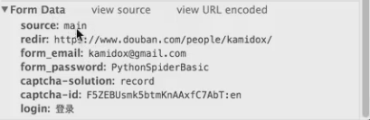
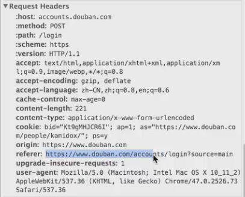
我们设置一下登录的应答，这里有3条cookies，登录完成以后，只要这3条cookies再发送给服务器，我们就作为一个合法的登录用户去操作只有登录用户才能操作的事情，比如，修改签名。
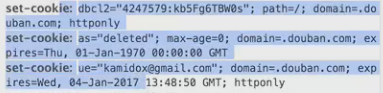
我们回到登录的请求来Form Data，这6个Data到底是哪里来的，里面有email，password还有验证码是我们自己输入的，还有一个cpatcha-id到底是哪儿来的？为了了解cpatcha-id到底是哪儿来的，我们需要去了解一下登录页面，因为我们相信这个一定是从登录页面来发过来的，我们来分析一下登录页面，我们看一下这个登录页面的form。我们可以看到这个source是隐藏的登录框，它的值是main，redirect它的意思是说登录完后要跳转到这个网址上去，所以这个也不会影响我们登录的成功与失败。
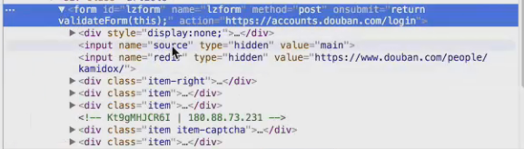
我们接下来看email，这个是登录用户名，这个是用户输入的。
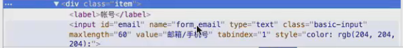
密码
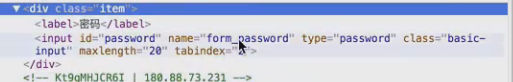
验证码，这个img就是验证码的图片，这个text就是这个用户根据这个图片来输入的验证码，这就防止我们的用户使用代码去登录，这个captcha-id就是后面的一串数字。
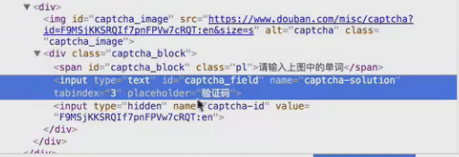
所以我们这样登录流程就有了，我们使用request去访问这个页面，然后从得到的html去解析这个captcha-id，去解析这个图片，然后我们就可以构造这个完整的请求POST给这个login。
最后我们再来讲一下这个验证码怎么做，这个验证码就是为了防止这个程序去自动登录，也就是说程序没有进行验证码，针对我们的用户进行密码的暴力破解，那这个网站的安全性是比较低的，那加了这个验证码之后，就可以防止这个程序去自动登录，那针对这个问题，那我们的程序怎么去解决呢？
那我们的解决方案是这样的，我们把这个图片的url给爬下来，然后我们用人眼去看这个图片，然后输入图片上的单词，所以我们的登录还是半自动的，所以我们要实现一个全自动的话，我们要涉及到一个继续学习的内容，那一个思路就是尽量去下载多的这个验证码图片，就是豆瓣网上的这个验证码图片，然后我们训练一个机器学习的算法，采用这个图像识别的方法，去把这个字母都把它识别出来，然后再把它转换成一个单词，自动的填进来，这个就是我们用机器学习的算法去破解这个思路，当然啦，这个豆瓣的验证码实际上是比较简单，因为它永远都是一个单词，如果看过12306购票的验证码的话，那个就比较复杂了，它用了很复杂的组合的验证码，那个要破解起来难度就比较大，不过，豆瓣这个其实相对起来是比较简单的，那我们今天的示例不会讲破解验证码的内容，因为破解验证码的内容是继续学习的内容，超出了我们这节课的内容范围。
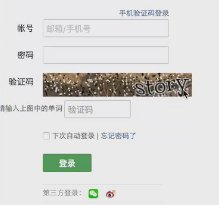
我们现在来看一下代码怎么写，怎么来模拟这个登录的过程。
# -*- coding: utf-8 -*-
import requests
from HTMLParser import HTMLParser
class DoubanClient(object):
def __init__(self):
object.__init__(self)
headers = {'User-Agent': 'Mozilla/5.0 (Windows NT 6.1; Win64; x64) AppleWebKit/537.36 (KHTML, like Gecko) Chrome/47.0.2526.73 Safari/537.36',
'origin': 'http://www.douban.com'}
self.session = requests.session() //创建一个session
self.session.headers.update(headers) //对它的头进行定制
def login(self, username, password,
source='index_nav',
redir='http://www.douban.com/',
login='登录'):
url = 'https://www.douban.com/accounts/login' //访问登录的主页面，目的是为了获取验证码的id和验证码的图片
r = self.session.get(url)
(captcha_id, captcha_url) = _get_captcha(r.content) //从这个函数里面去获取这个验证码，去解析这个网页的内容，然后去返回这个网页里面的captcha_id,和captcha_url
if captcha_id:
captcha_solution = raw_input('please input solution for captcha [%s]:' % captcha_url) //用户输入这个 captcha_solution
url = 'https://www.douban.com/accounts/login'
#post login request //构建了一个post请求发送给服务器
data = {'form_email': username, //用户名
'form_password': password,//密码
'source': source, //source
'redir': redir, //跳转地址
'login': login}
headers = {'referer': 'http://www.douban.com/accounts/login?source=main',
'host': 'accounts.douban.com'} //定制的头，因为我们要完完全全去模仿http的行为
if captcha_id:
data['captcha-id'] = captcha_id
data['captcha-solution'] = captcha_solution
self.session.post(url, data=data, headers=headers)
print(self.session.cookies.items())
def _attr(attrs, attrname):
for attr in attrs:
if attr[0] == attrname:
return attr[1]
return None
def _get_captcha(content):
class CaptchaParser(HTMLParser): //解析这个HTML，还是用的是HTMLParser
def __init__(self):
HTMLParser.__init__(self)
self.captcha_id = None
self.captcha_url = None
def handle_starttag(self, tag, attrs): //去解析这个tag的头
if tag == 'img' and _attr(attrs, 'id') == 'captcha_image' and _attr(attrs, 'class') == 'captcha_image':
self.captcha_url = _attr(attrs, 'src') //如果是url=src
if tag == 'input' and _attr(attrs, 'type') == 'hidden' and _attr(attrs, 'name') == 'captcha-id':
self.captcha_id = _attr(attrs, 'value') //如果是value=captcha_id
p = CaptchaParser()
p.feed(content)
return p.captcha_id, p.captcha_url //返回给调用者
def _get_ck(content):
class CKParser(HTMLParser):
def __init__(self):
HTMLParser.__init__(self)
self.ck = None
def handle_starttag(self, tag, attrs):
if tag == 'input' and _attr(attrs, 'type') == 'hidden' and _attr(attrs, 'name') == 'ck':
self.ck = _attr(attrs, 'value')
p = CKParser()
p.feed(content)
return p.ck
if __name__ == '__main__':
c = DoubanClient()
c.login('username@douban.com', 'password@douban.com') //登录时的用户名和密码
运行结果，这个时候提醒我们输入验证码
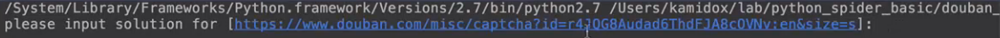
我们把这个验证码打开
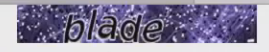
输入验证码。
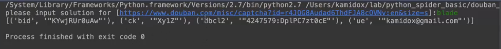
这节课的内容就到这个地方，下节课我们会修改这个签名，然后用这个登录网站的用户去修改签名，也顺便验证一下，这个登录是否成功。
【本文由麦子学院独家原创，转载请注明出处并保留原文链接】